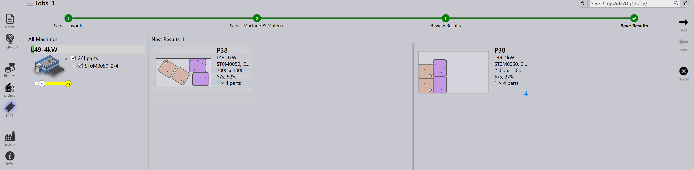

Lay-outpaneel
In dit gedeelte worden lay-outgerelateerde acties beschreven, zoals Send to machine, Recall from machine, Export outputs, Mark complete, Add parts…, Adapt/Compact…, Split layout en andere opties waarmee lay-out-instanties worden beheerd.

|
|
Send to machine
-
Wanneer een nest gereed is (gevuld of dringend nodig), kunt u het naar de machine verzenden.
-
Klik met de rechtermuisknop op het nest en selecteer Send to machine….
-
Er wordt automatisch een map aangemaakt die naar het nest is vernoemd.
-
Uitvoerbestanden (fxlyt, NC, rapport, csv) worden geëxporteerd naar de JOB-uitvoerlocatie.
-
Nesten die naar de machine zijn verzonden, worden weergegeven met een blauw vinkje.
| Zodra ze zijn vrijgegeven, worden die nesten niet opnieuw geprobeerd voor herverpakken. |
Recall from machine
-
Als de uitvoer moet worden gevalideerd of bijgewerkt (bijvoorbeeld om meer onderdelen toe te voegen):
-
Klik met de rechtermuisknop op de geëxporteerde lay-out.
-
Selecteer Recall from machine….
-
-
De uitvoerbestanden en de map (fxlyt, NC, rapport, csv) worden verwijderd.
-
Het nest wordt weer bewerkbaar.
-
U kunt wijzigingen aanbrengen en het opnieuw naar de machine verzenden.
Export outputs
-
Klik met de rechtermuisknop op een lay-out (nest) die naar de machine is verzonden en klik op Export outputs.
-
Met de optie Export Outputs worden de NC-, rapport- en lay-outbestanden naar de betreffende machine-uitvoermappen geëxporteerd.
-
Met deze optie wordt het NC-bestand opnieuw gegenereerd met de huidige eenheidsinstellingen voor de lay-out.
| Export Outputs is niet beschikbaar voor lay-outs die zijn voltooid en lay-outs die in de wachtrij staan voor herverpakken. |
Voltooid markeren
-
Zodra het nest op de machine is verwerkt, klikt u met de rechtermuisknop op het nest en selecteert u Mark complete….
-
U kunt meerdere nesten selecteren en tegelijkertijd als voltooid markeren.
-
Wanneer een nest als voltooid wordt gemarkeerd:
-
Het wordt grijs weergegeven, naar het einde van de lijst verplaatst en voorzien van een groen vinkje.
-
De lay-out wordt uit de lijst met actieve lay-outs verwijderd.
-
De onderdeel- en jobstatussen worden bijgewerkt en de verwerkte aantallen gaan over naar de voltooide status.
-
De uitvoerbestanden voor die lay-out worden uit de machine-uitvoerlocatie verwijderd om dubbel gebruik te voorkomen.
-
Add parts…

-
Gebruik deze optie om meer onderdelen toe te voegen aan een relatief slecht gevulde lay-out. Net als bij interactief nesten is dit een wizardgestuurde optie die op een of meerdere lay-outs tegelijk kan worden gebruikt.
-
TruSmartCAM plaatst de lay-out-herverpakwizard in het hoofdwerkgebied wanneer deze optie wordt gebruikt. Houd de Ctrl-toets ingedrukt en selecteer een of meer onderdelen die op de lay-out(s) moeten worden verpakt en druk op Next.

-
De geselecteerde onderdelen worden in de volgende stap weergegeven met een bewerkbare aantalkolom. Werk indien nodig de onderdeelaantallen bij in het veld Update Qty. Klik op Next om door te gaan naar het nesten. Merk op dat aantallen alleen kunnen worden verhoogd, niet verlaagd.
-
Alle lay-outs worden afzonderlijk genest en de nestresultaten worden weergegeven met de nieuw verpakte onderdelen erop geplaatst. Wanneer u de lay-out selecteert, worden alle bestaande lay-outonderdelen weergegeven. Het resultaat wordt automatisch verworpen als er tijdens het herverpakken geen nieuw onderdeel wordt geplaatst. Een lay-out met meerdere kopieën kan na het herverpakken resulteren in verschillende patronen.
Adapt/Compact…
-
Deze wizardgebaseerde opdracht kan worden gebruikt om een lay-out van de ene machine naar de andere aan te passen wanneer de oorspronkelijke machine buiten bedrijf is of wanneer de machinebelasting moet worden gebalanceerd.

-
Deze kan worden gebruikt wanneer de geplande plaat niet op voorraad is en de lay-out op een andere beschikbare plaat opnieuw moet worden gepland.
-
U kunt lay-outs die op kleinere platen zijn verpakt samenvoegen op grotere platen om materiaal efficiënter te gebruiken.
-
U kunt lay-outs die op grotere platen zijn verpakt opsplitsen in kleinere platen als er geen grote plaatvoorraad beschikbaar is.
-
U kunt de verpakkingsefficiëntie van meerdere lay-outs (zelfs van verschillende machines) verbeteren door ze samen te voegen.
-
Om deze te gebruiken selecteert u een of meer lay-outs en klikt u op Adapt/Compact… om de wizard in het werkgebied te openen.

-
Het linkerdeelvenster toont alle geselecteerde lay-outs en het deelvenster Parts toont de lay-outonderdelen.
-
Selecteer de doelmachine en het plaatmateriaal en klik vervolgens op next om het opnieuw nesten uit te voeren.
-
De nieuwe nestresultaten worden weergegeven in het deelvenster met resultaten.
-
Klik op next om de aangepaste of compactere lay-out op te slaan.

Een lay-out splitsen
Met de optie Split layouts… kunt u een bestaande lay-out in meerdere lay-outs splitsen door de aantallen te wijzigen, zonder dat u de tooling of het nesten opnieuw hoeft uit te voeren.
Deze functie is met name nuttig in de volgende scenario’s:
-
Wanneer u onmiddellijk een deel van het totale aantal moet produceren en het resterende aantal voor latere productie moet inplannen.
-
Wanneer productievereisten over meerdere diensten of dagen moeten worden verdeeld om de workflow en het gebruik van middelen te optimaliseren.
-
Wanneer een specifieke machine tijdelijk niet beschikbaar of bezet is en u de lay-out moet aanpassen aan de huidige productiebeperkingen.
Voer de volgende stappen uit om een lay-out te splitsen:
-
Selecteer in de weergave Layouts de gewenste lay-out.

-
Klik op Split layouts….
-
Voer de gewenste waarde in bij New Copies.

-
Klik op OK.

De geselecteerde lay-out is nu gesplitst in twee lay-outs met aangepaste aantallen.